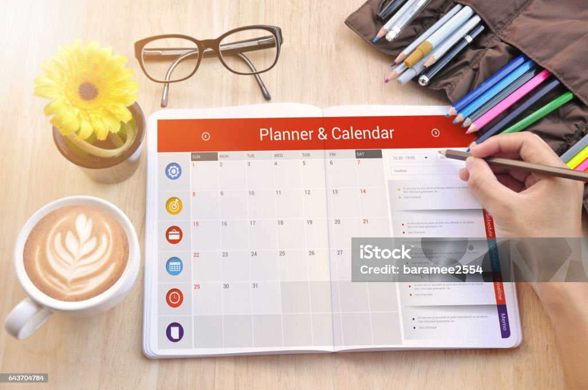

Healing Habit Hub
Need Help!
were we have at your service many ways in which Healing Habit Hub can come to help you there are several ways of getting ride of stress but in case you ignore them There are some few that we selected which will be helping you to control your stress and reduce your stress in a day
Ways to help you

1. Take care of your physical health.
It may seem like a no-brainer, but one of the best ways to keep stress at bay is to exercise via walking, jogging, gardening or anything that gets you active. “Virtually any form of physical activity can act as a stress reliever,” says the Mayo Clinic, adding that exercise pumps up your feel-good endorphins and other natural neural chemicals. Eating a variety of fruits, vegetables and whole grains also helps.
2. Attend regular therapy or counseling.
Therapy can be beneficial for anyone, even those who don’t have a mental health disorder. Since the Covid-19 pandemic, many therapy services have turned virtual, making it easier than ever to attend regular sessions over phone calls or video-chat.
3. Practice meditation.
Meditation is another common way to manage stress, as it focuses on relaxing the mind. It’s been practiced for thousands of years, but of course there are new ways to find your zen.
4. Keep a journal.
There are many ways to journal that can benefit your mental health and relieve stressors in your life — daily affirmations, venting, writing out gratitude, manifestation and more. For those new to journaling and don’t know where to begin, there are many guided journals or mental health workbooks to get started.

5. Maintain a routine.
Similar to journaling, sometimes maintaining a schedule or planning your day out in the mornings can help prevent stressors. Writing in a physical planner — not your online Google Calendar — can help you remember all of the things you need to do that day, week, month or year, and it allows you to take a break from your screens, even just for 10 minutes. Plus, many planners have different focuses, including self-care, mindfulness and physical activity.